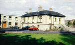
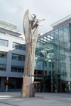

President
Phillip Matthews, President of NCI
About NCI
60 Years of Changing Lives
National College of Ireland has evolved from modest beginnings. Starting from Ranelagh’s Sandford Lodge in 1951, The Catholic Workers College, as it was then known, addressed key societal issues of the day. Lectures were led by a handful of dedicated Jesuits two nights a week, with 103 registered students in the first year.
Within 10 years, student numbers had dramatically increased. By 1966, nearly 1,300 students from union and management backgrounds were learning together at the re-branded National College of Industrial Relations (NCIR). Over the next 20 years, NCIR assumed an educational leadership role in workforce development, industrial relations and social justice issues.
The college re-branded as the National College of Ireland (NCI) in 1998 with an expanded National Campus Network and an array of national outreach programmes. The land and buildings at Sandford Road were generously transferred by the Jesuits to the NCI Board of Management.
Rapidly expanding, the College embarked on a bold €25,000,000 fundraising campaign to relocate to a 2-acre site in the Dublin Docklands. The IFSC campus is now a hive of activity for 3,500 full and part-time students, over 130 full-time and 220 part-time staff and faculty.
Location
View Larger Map